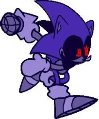
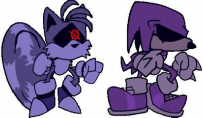

Hello everybody, today I will tell you about my little project
Takeover
Great way to start a TED talk amirite?
Regardless, I really am passionate about this little big project that I am working on So, I am going to let you peek a bit behind the curtain on what I’m doing
The genesis of the project
First, you probably don’t know anything about Takeover, but just follow along as I’ll take you on a journey through the many things that I wanted this to be
It all started on a family holiday around the country of ɐᴉlɐɹʇsn∀ and I was looking up Friday night Funkin’ mods because I like FNF, yeah, I am one of THOSE people
And I saw a little mod called Vs. Piracy Sonic

(here is the link to the mod if you want to play it: https://gamebanana.com/mods/359041)
I was immediately inspired by the design, especially those X-like pupils and the robotic-like appearance.
There was also a Tails and Knuckles variant:

And that was how Takeover was born!
The Tweaks
Of course, I do not want to just blatantly copy these designs as I know that the mod is super high effort and yet underrated. So I have brainstormed some concepts with what they would look like in my eyes, here are the results;
Sonic: Lighter blue texture, red shoes, less curved eyes, continuously gaping maw and a long mechanical spikey tail
Tails: 4 Blades replacing his tails (usually folded in so it looks like 2), desaturated yellow exterior with a crooked mouth always shown
Knuckles: Desaturated red exterior, two claws on his back, sharp spikes on his knuckles
And I renamed them to Hyper (Formally Sonic.bat), Blades and Slasher
I was deciding if I should make Hyper an exe (basically a sonic.exe variant) but I opposed to it as, I wanted to make something that is much more of a threat than him
The Inspiration
Every creation has its inspiration behind it
I don’t really want to dive in deep into it, so I’ll list it:
Piracy Sonic (as I said earlier) for the base model
Wither storm for the singularity
Sonic.exe for the extra limbs that come out of Hyper’s mouth
SatanOS for the reanimated
Made in Abyss (please don’t search it up) for the Catalyst and what is below it
I shall continue the rest in time, but I just wanted to share some of the stuff that I was working on